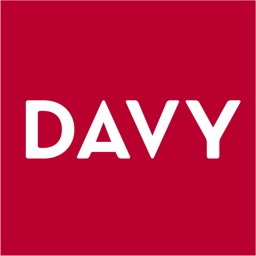

Professional Experience
Securities Services & Payments Insight Day — Selected Participant
J.P. Morgan ChaseSelected to attend J.P. Morgan’s Securities Services & Payments Insight Day at its Capital Dock office in Dublin. Explored both businesses through presentations from colleagues across a range of roles, gaining insight into their work and career opportunities.
Heard analysts share their experiences and advice during a panel discussion, and took part in conversations about careers at J.P. Morgan.
Wealth Management Intern
Davy
Gained an introduction to financial services and how wealth management firms operate, observing how advisors support clients with savings, investments, and financial planning. I gained direct insight into asset allocation frameworks, portfolio construction strategies, and client risk profile management across diverse market environments.
Built workplace confidence and professional communication skills by interacting with staff in a high-stakes advisory environment. Interacting directly with senior advisors deepened my understanding of wealth management operations, financial planning, and private client relationship building.
Global Markets Insight Programme Participant
TD SecuritiesAttended the TD Securities Insight Day after being selected to participate, gaining an introduction to Investment Banking, Sales & Trading and Global Markets. I learned about the firm's different business divisions through structured presentations from professionals across the organisation.
Networked with TD Securities professionals and developed a stronger understanding of financial markets, market dynamics, and careers within investment banking.
Spring Insight Programme Participant
PwC IrelandAttended the PwC Insight Day after being selected to participate, gaining an overview of the firm's service lines and career opportunities. I learned about Consulting, Audit, Tax and Deals through presentations delivered by PwC professionals.
Networked with PwC employees and gained valuable insight into the firm's culture, teamwork, professional development and the skills required to succeed within professional services.
Junior Analyst – Hardware Sector
Trinity Student Managed Fund
Responsible for performing detailed fundamental analysis on public equities within the technology hardware sector. I evaluate corporate financial statements, examine core balance sheet metrics, and assess historical performance alongside macro industry trends to identify primary valuation drivers and key competitive moats.
I actively contribute to investment committee discussions by formulating rigorous data-driven investment theses and financial valuation models. Through collaborating with senior analysts, my research directly informs the fund's equity pitch decisions, portfolio risk management, and strategic capital allocation across global financial markets.
Commercial Operations Assistant
Jessica GraafSupported day-to-day commercial operations, ensuring accuracy across operational and financial processes, and progressed into responsibilities involving customer invoicing, sales administration, and numerical data handling. Managed and reviewed sales data across wholesale channels and the Shopify platform to support informed commercial and financial decision-making.
Conducted pricing and cost analysis by incorporating production costs, transport expenses, and import duties, developing strong commercial awareness of margins, indirect costs, and overall business performance. This extended experience cultivated strong commercial awareness, operational efficiency, and financial decision-making discipline.
Intern
VodafoneShadowed members of the sales team to understand how Vodafone's mobile and broadband services are promoted to customers. I learned how customer needs are identified and matched to suitable products and services.
Gained insight into how targets and performance are measured within a professional sales environment.
Insurance Intern
ZurichAssisted with the preparation and checking of policy documentation, sitting in on team discussions around how insurance claims are processed and resolved.
Observed how risk assessment is applied when evaluating different types of insurance and learned about the importance of compliance and data protection when handling sensitive customer information.